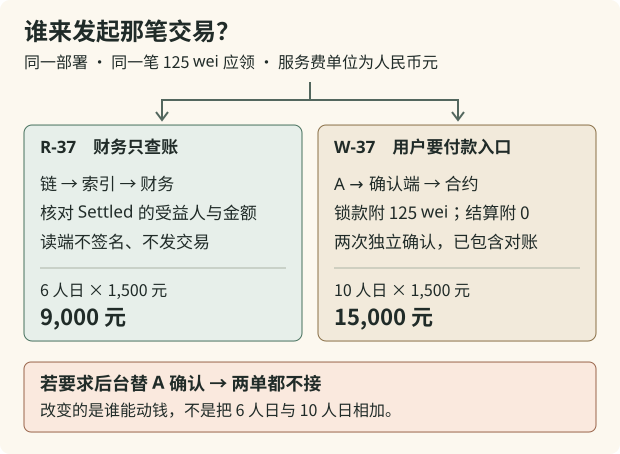

本页目录
选 R，不用连钱包。林禾验的是「查得到原来的记录；对不上就能说出差多少」，不是「我能在这个页面付款」。那 125 wei 是验收样本里的应领款，不是人民币服务费，也不是受益人已经提现的证明。
只改一项交付要求。 财务的查询照旧，但付款人 A 还要能在页面亲自核对、逐笔同意或拒绝锁款与结算。这时报多少？选 W，共 15,000 元。W 已经含 R 的对账工作，增加的是 6,000 元，不是再把两张单相加。若有人要求工程组在 A 不在场时替他签，两张单都没有这个权利；报价单本身也不是 A 的付款授权。
只想读清委托边界，可以去第 38 课看对账台怎样落实两方分工。下面是选做的委托评审：拿两份原单核责任人、签收件与当期价格，不需要启动节点。
先修为 M01–M06。本课直接用到第 16 课的部署清单、第 20 课的订单意图与回执和第 21 课的用户确认与拒绝。本次交付是可拿去评审的委托单，不需要启动节点。下文人名、金额和工期均为教学算例，不是市场行情、签收记录或链上实测。
把一句请求问到能写验收单
先不选钱包 SDK，请客户拿一张合成订单讲一遍操作：「谁坐在屏幕前？他现在靠什么判断？下一步要做什么？」财务林禾说，她不会让顾客付第二遍，只想把对不上的单子退回人工。项目负责人周宁补充，另一种方案才需要付款人 A 打开确认页。两人都说「到账」，因此还得再问一轮：
| 要问到的细节 | 本次冻结的答案 | 如果不问，会在哪里出错 |
|---|---|---|
| 哪条链、哪个资产、哪份合约？ | 只用 127.0.0.1:18556 上 chain ID 为 31337 的 Anvil；原生测试币 native:31337，单位 wei；C 是受信 M04 清单的 contractAddress。 |
同链号的新节点、同名合约或同数额的另一种资产，都不能认领旧订单。 |
| 谁付，谁受益，订单何时建立？ | A 是清单中部署者，也是合约的 payer；B 是 constructor.payee。先写应收意图；一个部署只留一张 active 订单。 |
日志本身不带店里的订单号；把同一条 Settled 配给两单，账就平了两次。 |
| 财务认哪张凭证？ | 认 C 在规范支上的 Settled(B, 应收整数)，索引追到同一链头，并达到约定的 2 次本地确认；留原始回执。 |
Locked 只是锁入；Settled 是 B 可领取；Withdrawn 才涉及实际转出。三行不能相加。 |
| 客户拒绝或节点断开时怎么办？ | 拒绝交易是正常出口；查不到当前证据就挂起，不能把「查询不到」改写为「未付，请重付」。 | 客服可能因 API 超时让付款人再付一次；财务也可能按旧分支误发货。 |
| 谁批准预算，谁能签收？ | 周宁批费用；只读方案由林禾验收，发起方案由周宁验收，林禾复核账。许川负责节点和数据库；A 自己决定每笔交易。 | 商务负责人签委托书不是 A 签链上交易；提供节点也不等于有权替用户花钱。 |
第一次评审不用捏造一个「正式地址」填表。先约定地址取值规则；到第一期，由许川附上本次部署的完整地址、部署交易及块哈希、ABI、运行时代码摘要、角色和截止时间。工程组按清单交接步骤与本地节点核对，再把封存的清单号写入委托单。缺附件就不进入交易联调，而不是复制上次演示的地址凑齐表格。


方案 R：把「只读」限定在链上
交给财务的签收件是《R-37 v1 · 只读对账委托及固定报价》。打开这一张就有责任人、前提、三期价格、验收脚本与签认栏；不需要先签另一张。它交付的是一行能追到原件的差异，不是钱包资产总览。
以 R37-N 为例：A 在截止前锁入 125 wei 并结算。如果结算块为 3，头和索引游标也为 3，只有 3 − 3 + 1 = 1 次确认。此时看见回执仍要等待。到同支块 4，游标追平且头哈希一致，才是 4 − 3 + 1 = 2 次。只有清单、资产、受益人和金额也一致，订单查询才报 READY_TO_BOOK。要求对方再发三次「请重查」：同一个键两次、换键一次。数据库最后应有 1 行应领流水、1 行 outbox，不是三笔款。Outbox 是和流水在同一事务保存的通知意图，不是消息已经送达。
把输入只改一处：在另一份新部署上，先建应收仍为 125 wei 的 R37-S，再让委托方测试操作人只锁并结算 124 wei。即使回执成功、确认足够，125 − 124 = +1 wei，应为 HOLD_AMOUNT，流水和 outbox 各 0。结算交易及回执中的 from 是 A，to 是 C；找到 Settled 日志后，logs[i].address 是发出日志的 C，解出的受益人才是 B。将订单号与这次部署、交易哈希、块号/哈希、logIndex 和查询时的头一起保存，财务才能从差异找回原件。测试操作人负责制造已知输入；受托方交付的读端只观察链，可以写自己的索引、游标与核销表，不得发链上交易。
方案 W：把「非托管」写成两次可拒绝的动作
如果销售要付款入口，单独采用《W-37 v1 · 用户确认发起及对账委托／固定报价》。即使没读过 R 单，这张也有完整的核销规则、依赖、签收人、报价和排除项。非托管指工程组和业务后台不握用户的签名权；那 125 wei 仍由链上的托管合约按规则持有。它不是「资金从未进过合约」的承诺。
从未锁款的新部署开始，A 是约定付款方，只使用本地临时身份。索引和对账服务不加载钱包；用户在独立确认端逐次核对链号、账户、目标 C、方法、附值和费用预算。两次请求各有否决点：
lock()附 125 wei。 这笔从 A 给 C 锁款，成功只意味着钱锁进合约。若用户在确认端拒绝，就没有这次广播；保存拒绝记录、未变的 A 的 nonce、未变的合约状态及零条新增锁款日志。一张未弹窗的页面截屏不能证明这条边界。settle()附 0 wei。 A 在截止前再次核对并同意，才请求把先前那笔锁款记作 B 应领。附值为零不表示免 Gas，也不表示又付了 125 wei。回到和 R 相同的回执与确认门槛，不把成功弹窗或单个哈希作为核销证据。
若确认前切账户或切链，原单不再代表屏幕上这个人/这张账本，须作废旧确认。若已收到哈希而回执暂缺，查原哈希，不再发一笔；若广播应答本身丢失且没有可查哈希，显示结果不明，交人工按账户、nonce 和节点记录核实，不能报「用户拒绝」。本地临时解锁账户能用来教学，但不能据此声称经受了真实钱包兼容性测试，也不能证明公开 RPC 上有同样的密钥隔离。
先拆工，再给每一笔服务费找一个签收物
两单是同一询价的完整替代报价。假设一位工程师串行交付，1 人日为 8 工时，日价 1,500 元。复用已有的部署和 Java 索引省掉了重写合约的工作，没有省掉核对部署、跑反例和让另一人复查的时间。依赖齐备且书面选单才开始计工作日。
| 节点及签收物 | R：6 人日 | W：10 人日 |
|---|---|---|
| M1 冻结范围 | 1 日，1,500 元；封存清单、订单规格与两种判据 | 2 日，3,000 元；另封存角色、方法及签名前展示字段 |
| M2 交主路径 | 3 日，4,500 元；索引、差异、回执回查及幂等 | 5 日，7,500 元；含对账，另交两个要用户确认的动作 |
| M3 验反例并移交 | 2 日，3,000 元；断连恢复与独立回查 | 3 日，4,500 元；增加拒绝、换身份/链及待查分支 |
| 固定总价 | 9,000 元 | 15,000 元 |
差的 4 人日是 M1 多 1 日明确权限、M2 多 2 日做交易请求、M3 多 1 日验证失败路径，合计 6,000 元。不能把两个包相加报 24,000 元；也不能删掉拒签验收，宣称原来的 9,000 元包含交易入口。两份样单均约定：每期交件后 2 个工作日内给书面结果；不符列用例退回修复，沉默不是验收；签收后 3 个工作日内付当期款。
让没参与谈价的同事复算一次。下面只是对两个文本单据核验「人日 × 单价 = 当期款」和合计，无须数据库或链节点。从仓库根目录用 POSIX shell 和 awk：
for f in labs/m10/scope/read-only.txt labs/m10/scope/user-confirmed.txt; do
awk '/^M[123] [0-9]+ [0-9]+ [0-9]+ / { n++; d += $2; fee += $4; if ($2*$3 != $4) bad=1 }
/^TOTAL / { totals++; wantDays=$2; wantFee=$3 }
END { print FILENAME, d, fee; exit (n!=3 || totals!=1 || bad || d!=wantDays || fee!=wantFee) }' "$f" || exit 1
done
读结果要回到各自的单据：R 的 M1、M2、M3 分别为 1、3、2 人日，合计 6；乘 1,500 元是 9,000 元。W 的 2、5、3 人日同理，故末两列应分别为 6 9000、10 15000。在自己的副本只把 R 的 M2 当期款从 4,500 改成 4,600，先看这一期：3 人日 × 1,500 仍该付 4,500 元。再看整单：末列合计变成 9,100 元，与 TOTAL 不符，命令应失败。退回的是写错金额的报价，不是 M2 功能；反过来，算术全过也不表示财务已看过回执、签收或付款。
谁付 RPC 账单，断连又算谁的缺陷？
节点配额是供给约束，不是人日费用。举一个容量草算：假设只有一块屏幕开 8 小时，每 10 秒查一次，每次先按 3 次 RPC 估算，光查询就是 8 × 3,600 ÷ 10 × 3 = 8,640 次。即使某服务给 10,000 次/日，也只余 1,360 次，尚未计入补扫、其他窗口和重试；日额度更推不出每秒允许的突发量。这不是对本实现的测量或任何供应商的条款。真要采购，先用请求计数区分查询、扫块、查回执，再问历史范围、限速、账期和费用上限。
本次两单均只验本地单节点。许川管启停、配额、续费、数据库备份和值班；工程组交付本版对断连的正确反应及恢复步骤。在约定环境中，节点停了，买节点或替客户通宵值班不是质保；断连时产品却显示「已付」就是要免费修复的缺陷。自 M3 签收次工作日起 10 个工作日内按原用例复现，工程组须在 1 个工作日内受理并反馈。换资产、做移动端适配、雇人值夜班或上主网，都缺新的依赖、责任和报价，不在这十天内免费添加。
收到「顺便」两个字，先拆变更再算余款
拿《CR-37-01 · 变更评审回单》开一次评审。假设 R 的 M1 已签付 1,500 元、M2 尚未开工。客户要离线 CSV，也要夜里后台自动替用户确认。前者新增输出而不改资金权限；后者直接改变签名责任，不能打包成一次「小改」。
可重报价的是一个订单、一行 CSV、五个字段：字段映射与导出 1 日，边界复验和交接 1 日，合计 3,000 元。给它一个独立的 M4：财务打开文本，读出应收 125、结算 124、差额 +1（单位均为 wei），表中的头哈希须对应这次观察，导出前后流水不变。预算负责人、验收人和工程组未签，这项不施工；若签，总价 12,000 元，原 1,500 元算已付，余 4,500 + 3,000 + 3,000 = 10,500 元，串行工期 8 日。夜间代签则直接拒绝，不报价、不收密钥；逐笔由 A 确认的 W 也没有承诺无人值守付款。
独立作业：付过两期之后，怎样签第三张需求单？
换一家合成商户。它选了 W，假设 M1、M2 均已签付。审计员要求一张可打印且注明观察块的应领凭单，不要 CSV，不增加链上动作。双方评估：版式与字段映射 1 人日、纸面到原回执的交叉核验 1 人日、失败用例及交接 1 人日，日价不变。独立试单应收 9007199254740993 wei，指定 C 的规范 Settled 为 9007199254740992 wei，已满足确认门槛。另有人提议「只差这么一点，顺便让后台补齐」。
提交一页评审回单，写清基线版本、原已付与未付、增量人日与新里程碑、双方审批及验收人、准许的动作和明确拒绝的动作；附一张写明「示意」的纸面凭单，把大整数原样写出，列出正式复核时要带的锚点与失败判据。不需要造交易哈希，也不接受只有钱包截图的作业。
自查判据：已付 3,000 + 7,500 = 10,500 元；保留原 M3 的 4,500 元。若变更获批，增 3 日、4,500 元，总额 19,500 元、共 13 人日；余款是 9,000 元而非 19,500 元。打印件须有订单、链及部署、原交易和日志位置、观察头/块哈希以及「应领」口径；差额正好 +1 wei，挂起且不产生入账或付款。新里程碑应能复核打印件，不以「已排版」签收。未批就不改原约；后台补款既无用户授权也不属于差异输出，不能当作四舍五入修复。
可核验的原文
- EIP-1193 · Ethereum Provider JavaScript API：
request、错误码4001、accountsChanged和chainChanged的定义。能调用 Provider 不代表用户同意了一笔交易。 - Ethereum Execution APIs · Transaction methods：按
eth_getTransactionReceipt阅读「未找到」和回执两类返回；对照块哈希、日志、执行状态，规范并未替商户定义「核销」。 - 本课程唯一的托管合约与订单表约束：前者给出锁款、结算和领取的实际角色，后者用于核对一次入账和一次 outbox 的口径。